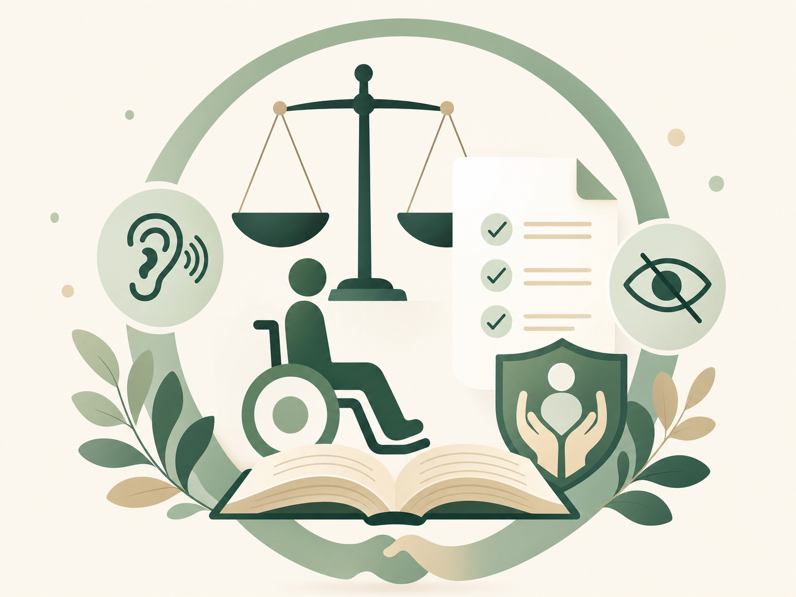

Direitos no Trabalho: Cotas e Adaptação Razoável
A Lei 8.213/1991 obriga empresas com 100+ empregados a contratar PCD. O Estatuto garante adaptação razoável e proíbe demissão sem equivalente contratação.
Ler artigo completoDireitos PCD
Conteúdos sobre acessibilidade, benefícios, saúde, educação, trabalho e concursos públicos para pessoas com deficiência e suas famílias.
Conteúdo informativo — não substitui orientação jurídica individual.

Mapa de conteúdo
Navegue diretamente pelo tema que precisa. Os blocos abaixo levam às seções desta página.
Conceito, barreiras, impedimentos e avaliação da deficiência.
Como organizar relatórios, exames e informações funcionais.
BPC/LOAS, CadÚnico, perícias e organização prévia.
Cotas, adaptação razoável e acessibilidade no ambiente profissional.
Atendimento educacional, barreiras e recursos de apoio.
Reserva de vagas, atendimento especial e leitura estratégica do edital.
A deficiência não deve ser vista apenas como um diagnóstico. Ela envolve impedimentos de longo prazo e a interação com barreiras que dificultam a participação plena da pessoa na sociedade. Esse é o modelo social da deficiência, adotado pela Lei Brasileira de Inclusão — Lei 13.146/2015 .
Uma pasta organizada evita perda de prazos e facilita requerimentos administrativos, perícias, matrículas, concursos e pedidos de atendimento específico. Mantenha sempre versões físicas e digitais.
O Benefício de Prestação Continuada (BPC), previsto na Lei 8.742/1993 (LOAS) , corresponde a 1 salário mínimo e exige atenção à documentação, renda familiar, inscrição no CadÚnico e avaliação biopsicossocial.
Tenho direito ao BPC? — verificação orientativa
Responda as perguntas abaixo para uma orientação inicial. Não substitui análise do INSS.
Você tem deficiência de longo prazo (física, mental, intelectual ou sensorial) que dificulta sua participação na sociedade?
A renda mensal da sua família, dividida por todos os moradores, é menor do que 1/4 do salário mínimo?
Em 2026, 1/4 do salário mínimo ≈ R$ 353,50
Você está inscrito no CadÚnico ou pode se inscrever?
Você atende aos critérios básicos. O próximo passo é agendar a avaliação biopsicossocial pelo Meu INSS ou pelo telefone 135. Leve toda a documentação médica e de renda.
Se você cuida de uma pessoa com deficiência, ela pode ter direito. Consulte um CRAS próximo para orientação.
O critério de renda per capita inferior a 1/4 do salário mínimo é exigido por lei, mas o INSS pode considerar despesas médicas no cálculo. Vale consultar o CRAS ou um advogado previdenciarista.
Procure o CRAS (Centro de Referência de Assistência Social) mais próximo para fazer a inscrição no CadÚnico. Depois, agende o BPC pelo INSS.
No trabalho, acessibilidade não é favor — é condição para participação. A Lei 8.213/1991, art. 93 , determina cotas para empresas com 100 ou mais empregados. O Estatuto da Pessoa com Deficiência garante adaptação razoável e combate a barreiras atitudinais.
Na educação, a pessoa PCD pode precisar de recursos de acessibilidade, tempo adicional, materiais adaptados, tecnologias assistivas e apoio conforme sua necessidade — garantidos pelo art. 28 da Lei 13.146/2015 .
O Decreto 9.508/2018 reserva no mínimo 5% das vagas em concursos federais para PCD. Leia com atenção as regras de reserva de vagas, envio de laudo, atendimento especial, avaliação biopsicossocial e recursos administrativos.
Aprofunde o tema
Textos detalhados com fontes oficiais, organizados por tema.
A Lei 8.213/1991 obriga empresas com 100+ empregados a contratar PCD. O Estatuto garante adaptação razoável e proíbe demissão sem equivalente contratação.
Ler artigo completoExistem duas modalidades diferentes: a aposentadoria por incapacidade permanente (antiga invalidez) e a aposentadoria específica para PCD com tempo de contribuição reduzido.
Ler artigo completoO SUS deve garantir acesso a órteses, próteses e outros recursos assistivos. Saiba como solicitar, o que levar e onde buscar atendimento.
Ler artigo completoA Lei 7.713/1988 garante isenção de Imposto de Renda sobre aposentadoria, reforma e pensão para portadores de moléstias graves listadas — como cegueira, paralisia irreversível e neoplasia maligna.
Ler artigo completoO conteúdo desta página tem caráter exclusivamente informativo e educacional. Não constitui assessoria ou consultoria jurídica. Cada situação é única — consulte um advogado especializado em direito previdenciário ou da pessoa com deficiência para orientação individual. Em caso de dúvidas, o CRAS e o INSS também oferecem atendimento gratuito.